생성 AI의 가짜 음성 검출 및 탐지
생성 AI 기술로 합성된 가짜(Fake) 음성을 실제(Real) 음성과 구별하는 분류 모델 개발. Noise Overlay, Pseudo Labeling 등 다양한 기법으로 제한된 데이터 환경에서 성능을 극대화하였다.
Overview
최근 생성 AI 기술의 발전으로 가짜 음성 합성이 점점 정교해지고 있다. 가짜 음성을 통해 유명인의 음성을 모방하거나 중요 인사의 발언을 조작할 수 있어 개인 및 기업의 명예 실추, 금전적 피해, 사회적 혼란 등 다양한 문제를 야기할 수 있다.
본 프로젝트는 DACON에서 주최한 SW중심대학 디지털 경진대회(2024)의 「SW와 생성 AI의 만남 - 생성 AI의 가짜(Fake) 음성 검출 및 탐지」 대회 참가 프로젝트로, 제한된 데이터 환경에서 Noise Overlay, Pseudo Labeling 등 다양한 기법을 적용하여 전국 7위(후원기업상)를 달성하였다.
데이터 분석 (Data Analysis)
- 음성 개수 불일치 - Train Data: 1개의 음성만 존재 / Test·Unlabeled Data: 샘플당 최대 2개의 음성
- 방음 환경 차이 - Train Data: 방음 환경에서 녹음된 음성만 존재 / Test·Unlabeled Data: 방음·비방음 환경 모두 존재
- 음성 길이 불균형 - Train Data: 0~39초의 다양한 길이, Fake/Real 분포 차이 / Test Data: 음성 길이 5초로 고정
- 인사이트 - Train/Test 간 구조적 불일치로 단순 학습 시 AI 예측 성능 저하 예상 → 전처리 필수
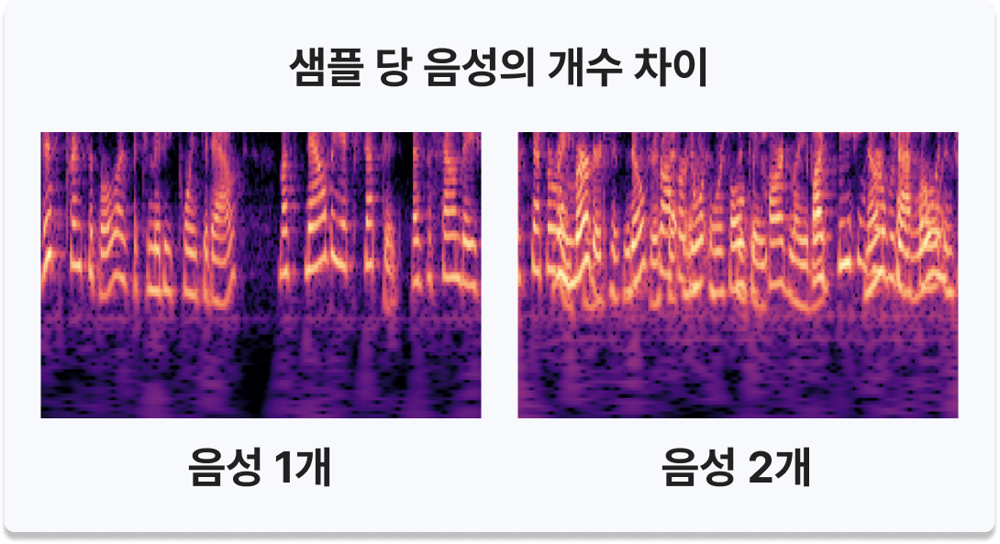
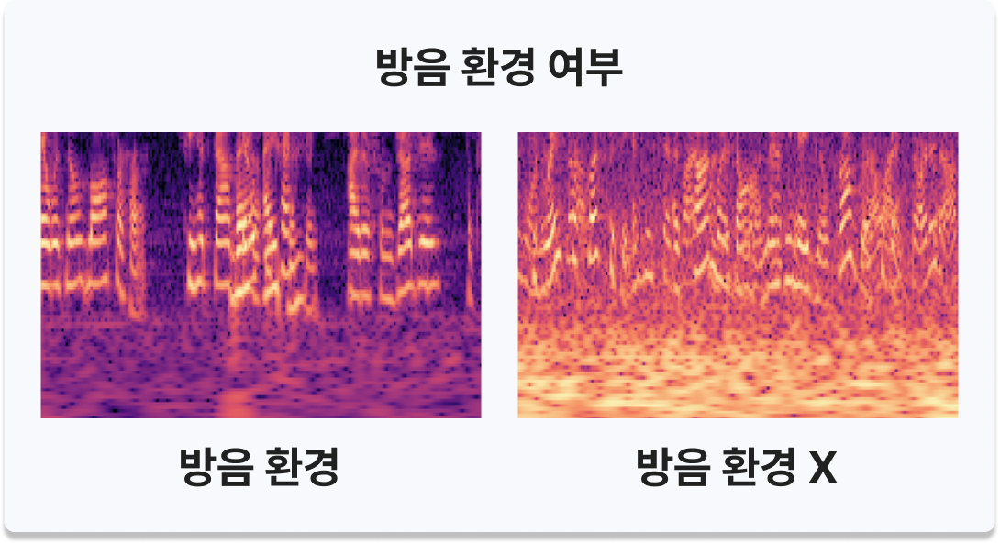
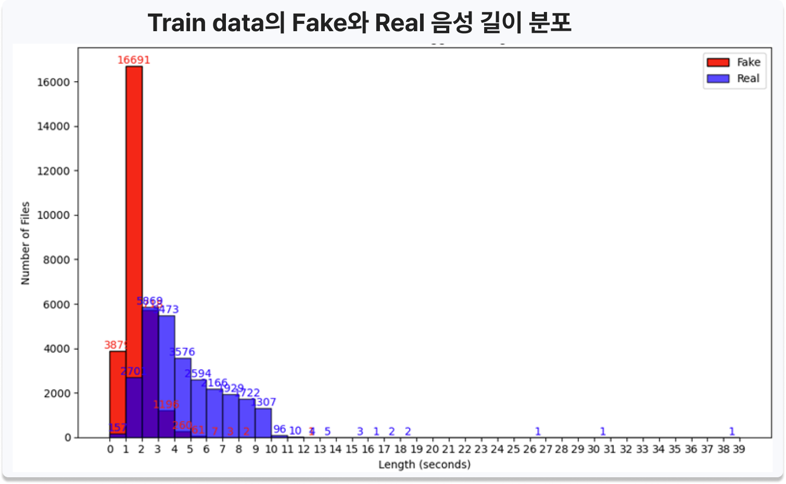
Approach
데이터 분석 및 전처리
- Train data 구조적 문제점 3가지 분석 (음성 개수 불일치, 길이 imbalance, 방음 환경 차이)
- Audio Transformation 비교 분석 (Mel-Spectrogram, MFCC, CQT) - Fake/Real 판별 핵심인 Formant가 존재하는 저주파 대역에서 높은 해상도를 보이고, 시간 해상도를 유지한 채 주파수 변화를 분석할 수 있는 CQT를 최종 채택
- Noise Extractor 설계 - Unlabeled data에서 Voice Active Detector로 음성 구간을 제거해 순수 배경 소음(noise)만 추출
- 추출한 noise를 Train data에 overlay하여 비방음 환경을 재현하고, Train data끼리 overlay하여 2인 음성 데이터를 생성하는 등 음성 개수·환경을 고려한 조합 오디오 증강으로 Train Dataset(약 248,400개) 구성
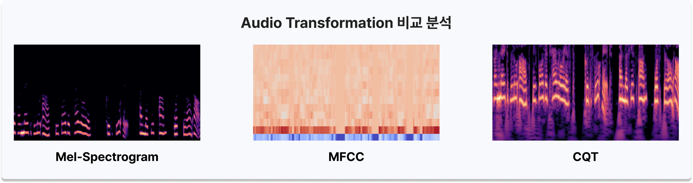
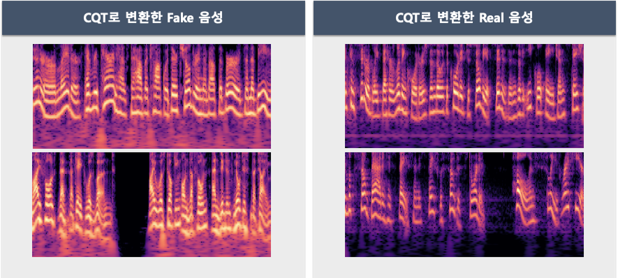
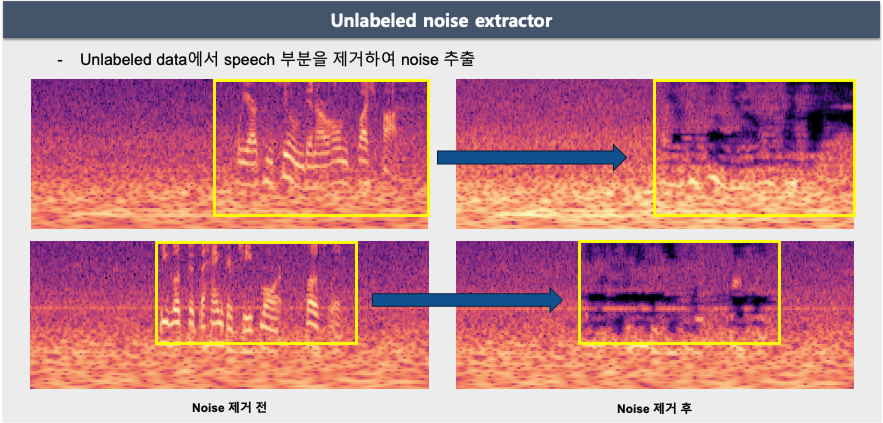
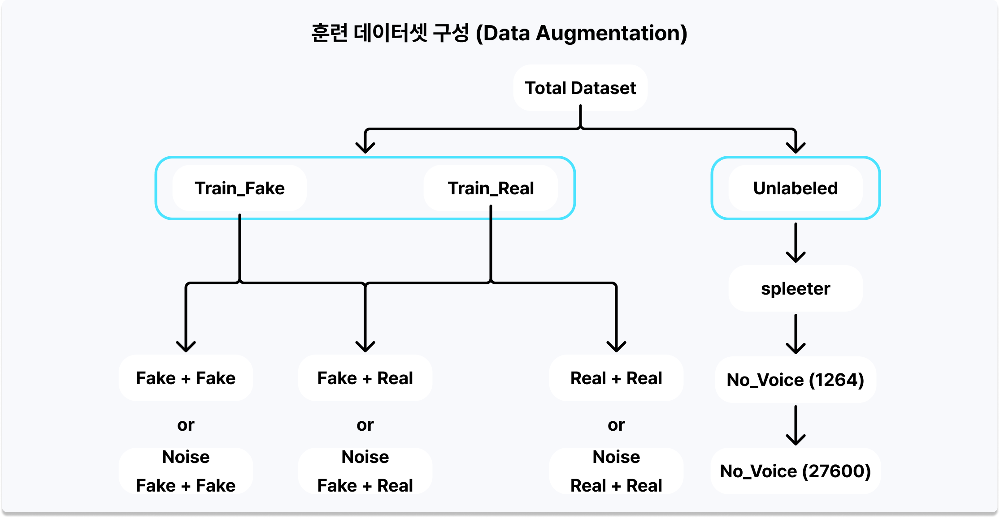
AI 모델링
- AST(Audio Spectrogram Transformer) 채택 - 기존 스펙트로그램 대신 CQT를 입력으로 사용하는 Transformer 기반 모델. 대규모 비지도 데이터로 사전 학습되었으며 self-attention 메커니즘으로 음성 신호의 문맥적 정보를 효과적으로 학습 (Gong et al., 2021)
- Teacher-Student 기반 Pseudo Labeling - Train Data로 학습한 Teacher AST가 Unlabeled Data에 대한 예측을 생성하고, 이를 Pseudo-labeled Data로 삼아 원본 Train Data에 합쳐 재학습
- pad2D 함수 설계 - 5초 미만 음성은 반복(loop)으로, 5초 초과 음성은 Random Select로 길이를 5초로 통일하여 입력 안정화
- CutMix/MixUp 실험 참여 및 성능 비교 분석 - 음성의 연속적 특성상 CutMix보다 MixUp이 더 효과적임을 확인
- Pseudo Labeling 기반 Semi-supervised Learning 적용 - Test Data와 유사한 Unlabeled Data를 학습에 참여시켜 모델의 일반화 성능 개선
- 추론 파이프라인 - Trained AST의 예측 결과와, Wav2vec2(STT)·Silero(VAD)로 구성한 Voice Active Detector의 비음성(Non-speech) 판별 결과를 OR 연산으로 결합해 최종 출력을 산출
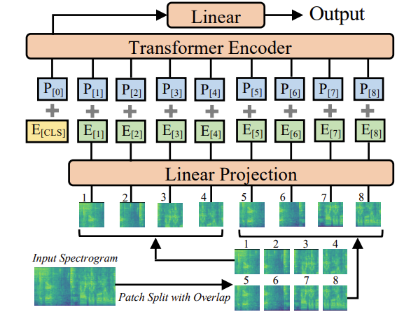
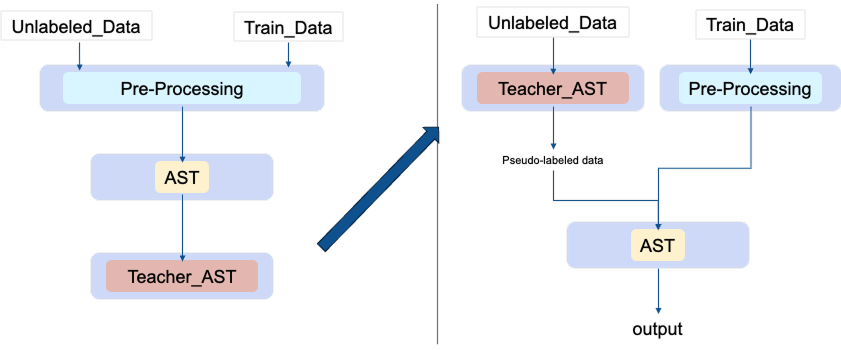
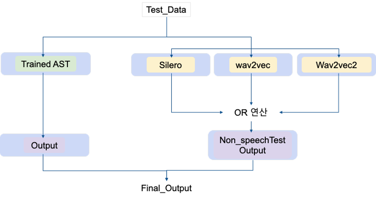
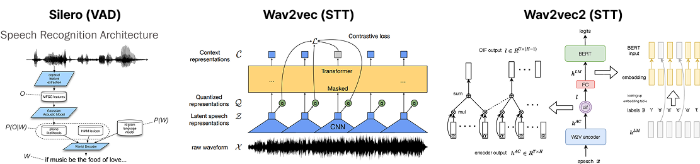
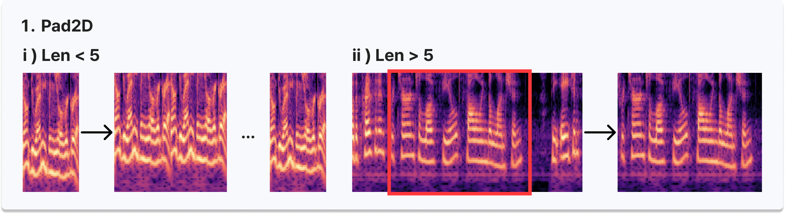
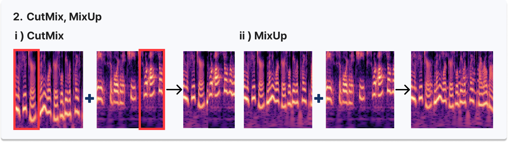
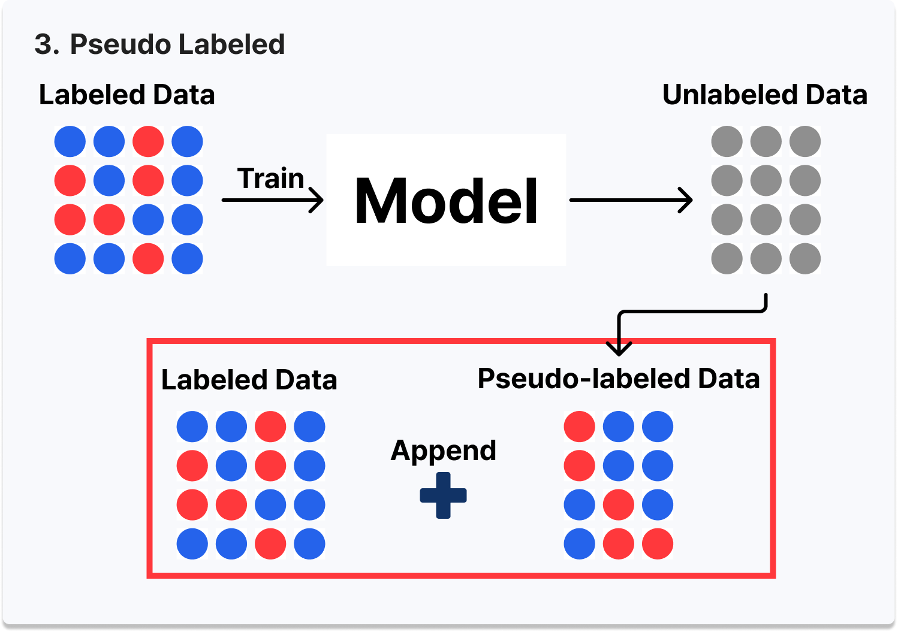
| Augmentation | Accuracy | 개선폭 |
|---|---|---|
| Base | 93.04% | - |
| Train data + Noise Overlay | 94.48% | +1.44 |
| 2 Voice Overlay | 94.53% | +1.49 |
| CutMix | 94.29% | +1.25 |
| Pseudo Label | 95.23% | +2.19 |
| pad2D | 95.42% | +2.38 |
| MixUp | 96.52% | +3.48 |
Tech Stack
Team
국립한밭대학교 정보통신공학과 연구실 AiRLab (총 5명)
Results & Insights
- 2024 SW중심대학 디지털 경진대회 AI 부문 전국 7위 수상 (카카오 후원기업상)
- 2024 소중한 SW·AI 경진대회 AI 부문 1등 수상 (국립한밭대학교, 2024.06)
- DACON 리더보드 최종 스코어 Public 0.18745 / Private 0.19001 (Team AiRLab)
- 제한된 데이터 환경에서 Noise Overlay, Pseudo Labeling 등 여러 방법론으로 성능 극대화 가능성 확인 - MixUp이 가장 큰 폭(+3.48%p)의 성능 개선을 보임
- 생소한 분야에 대한 두려움을 극복하고 팀원으로서 역할을 수행, 논문 검색 및 핵심 내용 파악 능력 향상
- 부족함을 인정하고 팀원들의 장점에서 배우는 자세를 유지, 팀워크가 수상의 원동력이 됨
- Future Work로 Meta Pseudo Label, Speech Separation(Mossformer) 등을 통한 성능 개선 방향을 제안
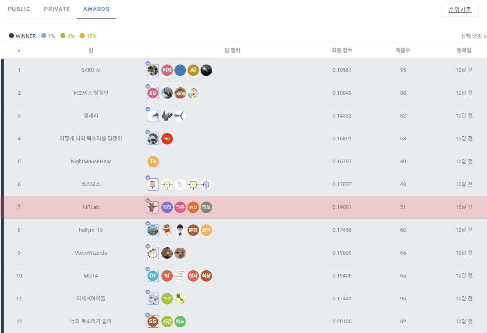
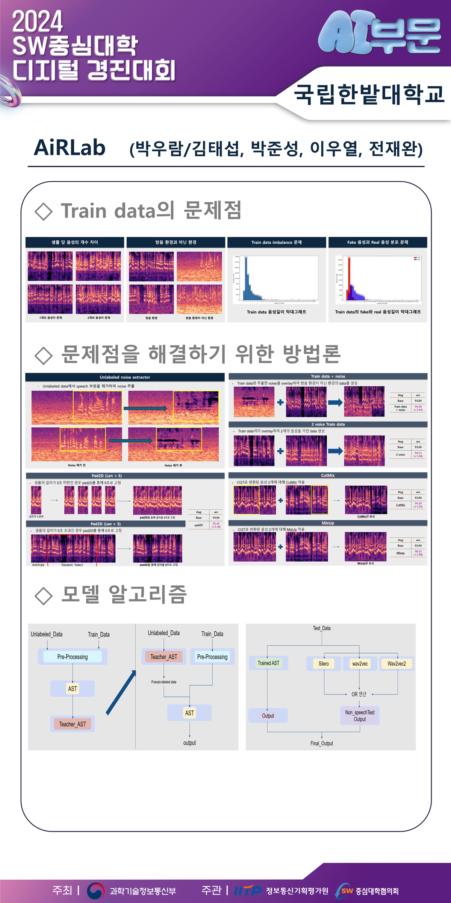